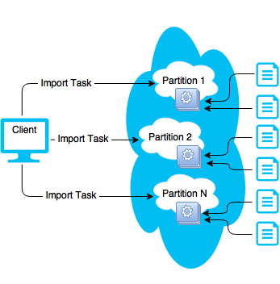

| Download |
|---|
| Github link |
The Export/Import tool was originally created to help our engineers quickly replicate test scenarios.
Since its creation this tool has evolved to be an easy-to-use method for migrating data to new
The Export/Import tool leverages several
When the Export/Import tool is started it will send either an Export or Import task to each partition, and this is where the actual operation will be performed. To put it simply each primary instance is responsible for exporting or importing their own data.
You can download and build the source code from our GitHub repository.
Directions on how to build the project can be found in the repository's README document.
Alternatively you can contact your GigaSpaces Technical Account Manager for pre-built binaries.
During the export a remote task is sent to each primary space instance on the grid; or a subset of the space instances if specified via the command line options.
Once the task begins executing on the grid it will acquire a list of all space classes described in that instance, and use this list to drive the creation of export files. It is at this time that a new thread pool will be created to dictate how many files can be exported in parallel.
For each combination of class name and partition a query will be performed on the local space instance. If any space class instances match the route to the new partition it will be written to disk. If no matches were found the file will not be written.
Files Name Pattern:
{class-name-with-package}.{originating-partition}.{target-partition}.ser.gz
Example: com.j_spaces.examples.benchmark.messages.MessagePOJO.ser.gz
File Content Structure (Uncompressed):
UTF: Class Name
Obj: Specialized Type Description (Portable/Serializable Class Definition)
Obj: Space Class Instance (x Row Count)
Due to the number of configuration options available we are unable to show all permutations of the tool, but the simplest and most common usage is shown below.
./setAppEnv.sh
$JAVA_HOME/bin/java -cp $GS_HOME/lib/required/*:./lib/* com.gigaspaces.tools.importexport.Program -o export -g $LOOKUPGROUPS -s myspace --jarless -d /tmp/export/output
call "%~dp0\setAppEnv.bat"
%JAVA_HOME%\bin\java.exe -cp %GS_HOME%\lib\required\*;.\lib\* com.gigaspaces.tools.importexport.Program -o export -g %LOOKUPGROUPS% -s myspace --jarless -d c:\tmp\output
PS C:\var\import-export> .\export.ps1
2015-12-12 23:02:15,130 CONFIG [com.gigaspaces.logger] - Log file: C:\opt\gigaspaces\xap-10.2.0-ga\logs\2015-12-12~23.02
-gigaspaces-service-riomhairenua-13864.log
2015-12-12 23:02:15,125 INFO [com.gigaspaces.tools.importexport.config.SpaceConnectionFactory] - Creating connection wi
th url:
/./myspace?total_members=2,0&schema=default&cluster_schema=partitioned-sync2backup&id=1&groups=space-test-10&state=start
ed
2015-12-12 23:02:15,199 INFO [import-export] - Started import/export operation with the following configuration:
EXPORT [Space: myspace, Lookup Groups: [space-test-10], Lookup Locators: [], Output/Input Directory: c:\var\import-expor
t\output, Operating Partitions: '[]', Export/Import Classes: '[]', XAP Read Batch Size: 1000, PU Name Override: null, Se
curity level: null, New partition count: Not specified, Threads: 20, Jarless: true, Thread sleep ms: 1000]
2015-12-12 23:02:17,203 INFO [import-export] - Partition 1 Finished ---------------------
Partition Id: 1
Process Id: 10048
Hostname: 127.0.0.1
Elapsed Process Time (ms): 1610
Files:
com.j_spaces.examples.benchmark.messages.MessagePOJO.1.1.ser.gz | Records: 5000 | Elapsed time (ms): 742
2015-12-12 23:02:17,204 INFO [import-export] - Partition 2 Finished ---------------------
Partition Id: 2
Process Id: 11592
Hostname: 127.0.0.1
Elapsed Process Time (ms): 1595
Files:
com.j_spaces.examples.benchmark.messages.MessagePOJO.2.2.ser.gz | Records: 5000 | Elapsed time (ms): 737
PS C:\var\import-export>
| Short Name | Long Name | Optional / Required | Default Value | Acceptable Values | Description |
|---|---|---|---|---|---|
| Grid Connection Information | |||||
| -s | --space | required | n/a | n/a | Name of the target space to perform the operation on. |
| -l | --locators | optional | n/a | n/a | A comma separated list of |
| -g | --groups | optional | n/a | n/a | A comma separated list of |
| -u | --username | optional | n/a | n/a | Specifies a |
| -a | --password | optional | n/a | n/a | Specifies a |
| --security-level | optional | n/a | grid, space, both | Indicates the level of security for the grid. | |
| General Configuration | |||||
| -o | --operation | required | export | export, import | A flag indicating whether an export or import will be performed. |
| -d | --directory | required | n/a | n/a | A full path to the directory containing either previously exported files, or where the exported files should be placed. |
| --pu-name | optional | n/a | n/a | Overrides the name of the processing unit, relevant only when the processing unit is different from space name. | |
| --jarless | optional | n/a | n/a | Indicates that the import / export will not use Java class definitions during processing. | |
| -c | --classes | optional | n/a | n/a | A comma separated list of class names to operate on. The class names are case sensitive. |
| -p | --partitions | optional | n/a | n/a | A comma separated list of partitions that will be operated on. |
| -n | --number | optional | n/a | n/a | Relevant only when exporting data for use in a grid with a different partition count (i.e. Exporting data from a 6 partition grid to 2 partition grid or vice versa.) |
| Performance Configuration | |||||
| -b | --batch | optional | 1000 | n/a | Performance option to batch records retrieved from the space. |
| --thread-sleep | optional | 1000 | n/a | Number of milliseconds to sleep between checks for task completion. | |
| -t | --threads | optional | 20 | n/a | Number of threads to simultaneously process import or export files. |
During the import a remote task is sent to each primary space instance. From there each primary instance will search the file system for relevant files. Relevancy is determined by the second integer in the file name also known as the destination partition ID.
All files destined for the new partition will then be queued and processed from the export/import thread pool. The number of files that will be processed in parallel for each partition is configurable and based on the size of the export/import thread pool.

Due to the number of configuration options available we are unable to show all permutations of the tool, but the simplest and most common usage is shown below.
./setAppEnv.sh
$JAVA_HOME/bin/java -cp $GS_HOME/lib/required/*:./lib/* com.gigaspaces.tools.importexport.Program -o import -g $LOOKUPGROUPS -s myspace -d /tmp/export/output
call "%~dp0\setAppEnv.bat"
%JAVA_HOME%\bin\java.exe -cp %GS_HOME%\lib\required\*;.\lib\* com.gigaspaces.tools.importexport.Program -o import -g %LOOKUPGROUPS% -s myspace -d c:\tmp\output
PS C:\var\import-export> .\import.ps1
2015-12-13 00:58:12,624 CONFIG [com.gigaspaces.logger] - Log file: C:\opt\gigaspaces\xap-10.2.0-ga\logs\2015-12-13~00.58-gigaspaces-service-
riomhairenua-3836.log
2015-12-13 00:58:12,618 INFO [com.gigaspaces.tools.importexport.config.SpaceConnectionFactory] - Creating connection with url:
/./myspace?total_members=2,0&schema=default&cluster_schema=partitioned-sync2backup&id=1&groups=space-test-10&state=started
2015-12-13 00:58:12,697 INFO [import-export] - Started import/export operation with the following configuration:
IMPORT [Space: myspace, Lookup Groups: [space-test-10], Lookup Locators: [], Output/Input Directory: c:\var\import-export\output, Operating
Partitions: '[]', Export/Import Classes: '[]', XAP Read Batch Size: 1000, PU Name Override: null, Security level: null, New partition count:
Not specified, Threads: 20, Jarless: false, Thread sleep ms: 1000]
2015-12-13 00:58:14,699 INFO [import-export] - Partition 1 Finished ---------------------
Partition Id: 1
Process Id: 10048
Hostname: 127.0.0.1
Elapsed Process Time (ms): 1096
Files:
com.j_spaces.examples.benchmark.messages.MessagePOJO.1.1.ser.gz | Records: 5000 | Elapsed time (ms): 1095
2015-12-13 00:58:14,700 INFO [import-export] - Partition 2 Finished ---------------------
Partition Id: 2
Process Id: 11592
Hostname: 127.0.0.1
Elapsed Process Time (ms): 1099
Files:
com.j_spaces.examples.benchmark.messages.MessagePOJO.2.2.ser.gz | Records: 5000 | Elapsed time (ms): 1092
PS C:\var\import-export>
| Short Name | Long Name | Optional / Required | Default Value | Acceptable Values | Description |
|---|---|---|---|---|---|
| Grid Connection Information | |||||
| -s | –space | required | n/a | n/a | Name of the target space to perform the operation on. |
| -l | –locators | optional | n/a | n/a | A comma separated list of |
| -g | –groups | optional | n/a | n/a | A comma separated list of |
| -u | –username | optional | n/a | n/a | Specifies a |
| -a | –password | optional | n/a | n/a | Specifies a |
| –security-level | optional | n/a | grid, space, both | Indicates the level of security for the grid. | |
| General Configuration | |||||
| -o | –operation | required | export | export, import | A flag indicating whether an export or import will be performed. |
| -d | –directory | required | n/a | n/a | A full path to the directory containing either previously exported files, or where the exported files should be placed. |
| –pu-name | optional | n/a | n/a | Overrides the name of the processing unit, relevant only when the processing unit is different from space name. | |
| Performance Configuration | |||||
| -b | –batch | optional | 1000 | n/a | Performance option to batch records retrieved from the space. |
| –thread-sleep | optional | 1000 | n/a | Number of milliseconds to sleep between checks for task completion. | |
| -t | –threads | optional | 20 | n/a | Number of threads to simultaneously process import or export files. |
Yes, the Export/Import tool will work with secured infrastructure components and/or secured spaces. The username and password provided should have sufficient privileges to execute a remote task on the grid.
If using a secured space the space must be authenticated with sufficient privileges to read, write, and update all classes, as well as monitor_pu.
The most common reason for this exception is that your storage directory (the -d command line option) may not exist on all hosts.
Double check the directory exists before re-running the Export/Import tool.
Yes, this tool has been tested for upgrades between XAP 9.7, XAP 10, and XAP 11.
Each partition is responsible for exporting or importing its data. Because of this the files will be stored in the directory provided on that partition's host machine.
It is recommended that all machines mount a NFS drive that will be used during the export and import operations. This will ensure all partitions
regardless of hosts will have access to the export files.
--jarless option during export?If you do not provided the --jarless option during export you will be required to include your application jars on the Export/Import tool's classpath
as well as the classpath used by your processing unit running on
When --jarless is provided all objects will be read as a
There are several reasons this could be. If you're seeing this on one of your space classes during import it is because
the classes were exported without the --jarless option and you will need to include your jars in the Export/Import tools
classpath as well as the Processing Unit's classpath.
If this is occurring during export you may be missing jars on the classpath, or the class definitions in the space may not be available to the export thread. If it is the latter the solution would be making your jars available to the processing unit instances by placing the required jars in your pu_common folder before the processing units are deployed.